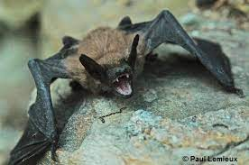

zone géographique : Elle se trouve du sud du Canada (Colombie-Britannique, Alberta, Saskatchewan, Manitoba,
Ontario, Québec et Nouveau-Brunswick) jusqu’en Amérique du Sud (Colombie et Venezuela). Elle est également
présente en Alaska et dans certaines parties des Caraïbes.
Lieu de vie: Cette espèce vit dans différents habitats, mais elle est plus commune dans les forêts dominées par
les feuillus.
Alimentation: insectivore
Longévité : Cette espèce peut vivre jusqu'à 19 ans, mais sa longévité est en moyenne de 10 ans.
Famille: vespertilionidés
Taille : 6,8 cm
mode de vie : nocturne
comportement : Cette espèce est sédentaire, les migrations sont rares et isolées. Les mâles sont solitaires
toute l'année.